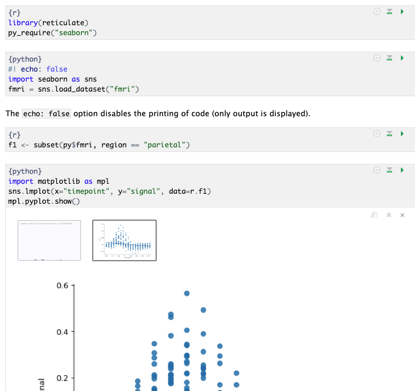
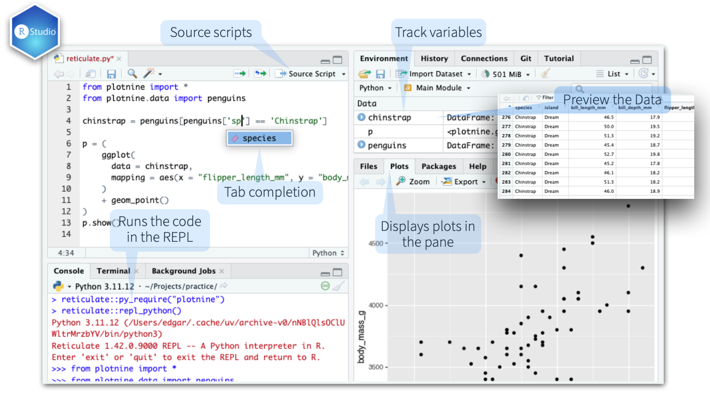
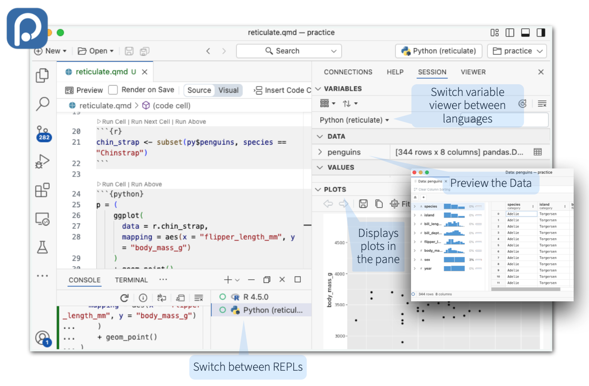

Download PDF

Translations (PDF)
Reticulate makes it very easy to get started with Python in R. Simply use py_require() to let Reticulate know which Python version and packages you will need:
library(reticulate)
py_require("polars", python_version="3.12")
pl <- import("polars")An isolated Python virtual environment that you will not need to manage is created, this eliminates the risk of the environment becoming unstable overtime.
Reticulate uses an extremely fast Python package manager called uv. Some features of this system are:
Reticulate will automatically download and install uv for you in a location that does not make system changes to your machine.
Manage Virtualenv and Conda environments. Use if py_require() is not an option, or if using an existing Python virtual environment.
| Create new | virtualenv_create() / conda_create()virtualenv_create("my-env") |
| Use in R session | use_virtualenv() / use_condaenv() / use_python()use_virtualenv(“my-env") |
| List available | virtualenv_list() / conda_list() |
| Install packages | py_install() / virtualenv_install() / conda_install()py_install(“polars”, "my-env") |
| Delete from disk | virtualenv_remove() / conda_remove()virtualenv_remove("my-env") |
Import any Python module into R, and access the attributes of a module with $.
import(module, as = NULL, convert = TRUE, delay_load = FALSE): Import a Python module. If convert = TRUE, Python objects are converted to their equivalent R types. Access the attributes of a module with $.
import("polars")import_from_path(module, path = “." ): Import module from an arbitrary filesystem path.
import_main(convert = TRUE): Import the main module, where Python executes code by default.
main <- import_main()import_builtins(convert = TRUE): Import Python’s built-in functions
builtins <- import_builtins()
builtins$print("hello")Source a Python script and make the Python functions and objects it creates available in R
source_python(file, envir = parent.frame(), convert = TRUE): Run a Python script, assigning objects to a specified R environment.
source_python("file.py")Execute Python code into the main Python module. Access the results, and anything else in Python’s main module, with py$.
py_run_file(file, local = FALSE, convert = TRUE): Run Python file in the main module.
py_run_file("my-script.py")py_eval(code, convert = TRUE): Run a Python expression, return the result. py_eval(“1 + 1”)
py_eval("1 + 1") py_run_string(code, local = FALSE, convert = TRUE): Run Python code (passed as a string) in the main module.
py_run_string("x = 10")
py$xCall Python as a code chunk in Quarto and R Markdown

Begin Python chunks with ```{python} . Chunk options like echo, include, etc. all work as expected
With py_require(), define which Python libraries will be used in the notebook
Use the py object to access objects created` in Python chunks from R chunks
Python chunks all execute within a single Python session so you have access to all objects created, and modules loaded, in previous chunks.
Use the r object to access objects created in R chunks from Python chunks
Output displays below chunk, including plots.
A REPL (Read, Eval, Print Loop) is a command line where you can run Python code and view the results.
> library(reticulate)
> py_require("plotnine")
> repl_python() # Starts a Python REPL
>>> from plotnine.data import penguins
>>> penguins.shape>>> prompt.exit to close and return to R console.Reticulate provides automatic built-in conversion between Python and R for many Python types.
py_to_r(x): Convert a Python object to an R object. Also r_to_py()| R | Python |
|---|---|
| Single-element vector | Scalar |
| Multi-element vector | List |
| List of multiple types | Tuple |
| Named List | Dict |
| Matrix/Array | NumPy ndarray |
| Data Frame | Pandas DataFrame |
| Function | Python function |
NULL, TRUE, FALSE |
None, True, False |
Specify how the objects will be converted
tuple(..., convert = FALSE): Create a Python tuple.
tuple("a", "b", "c")dict(..., convert = FALSE): Create a Python dictionary.
dict(foo = "bar", index = 42L)py_dict(): A dictionary that uses Python objects as keys.
py_dict("foo", "bar")np_array(data, dtype = NULL, order = "C"): Create NumPy arrays.
np_array(c(1:8), dtype = "float16")array_reshape(x, dim, order = c("C", "F")): Reshape a Python array.
x <- 1:4
array_reshape(x, c(2, 2)) py_func(f): Wrap an R function in a Python function with the same signature.
py_func(xor) iterate(it, f = base::identity, simplify = TRUE): Apply an R function to each value of a Python iterator or return the values as an R vector, draining the iterator as you go. Also iter_next() and as_iterator().
py_iterator(fn, completed = NULL): Create a Python iterator from an R function.
seq_gen <- function(x){n <- x; function() {n <<- n + 1; n}}
py_iterator(seq_gen(9))The RStudio and Positron IDE’s provide first-class integration with Reticulate.


py_capture_output(expr, type = c("stdout", "stderr")): Capture and return Python output . Also py_suppress_warnings().
py_get_attr(x, name, silent = FALSE): Get an attribute of a Python object. Also py_set_attr(), py_has_attr(), and py_list_attributes().
py_help(object): Open the documentation page for a Python object.
py_help(sns)py_last_error(): Get the last Python error encountered. Also py_clear_last_error() to clear the last error.
py_save_object(object, filename, pickle = "pickle", ...): Save and load Python objects with pickle. Also py_load_object().
py_save_object(x, "x.pickle")with(data, expr, as = NULL, ...): Evaluate an expression within a Python context manager.
py <- import_builtins();
with(py$open("output.txt", "w") %as% file,
{file$write("Hello, there!")})Reticulate follows a specific order to discover and choose the Python environment to use
RETICULATE_PYTHON or RETICULATE_PYTHON_ENVuse_python() or use_virtualenv(), if called before import().import(“scipy")RETICULATE_PYTHON_FALLBACKr-reticulatepy_require() (See tip below)To have py_require() take more precedence, set RETICULATE_PYTHON=“managed”. It will become number 1 on the list.